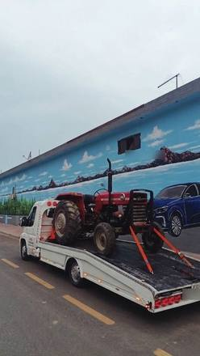
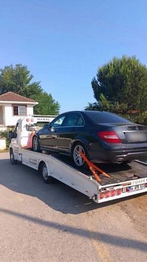
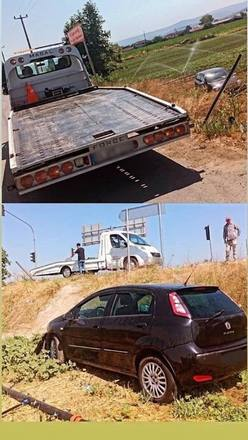
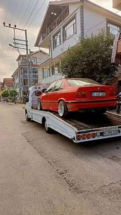
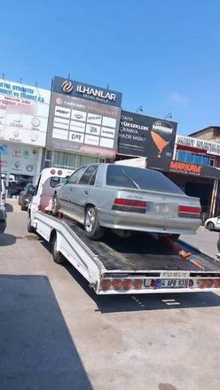
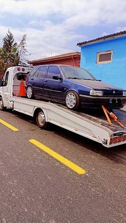
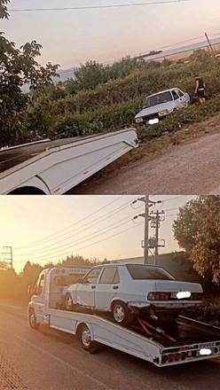
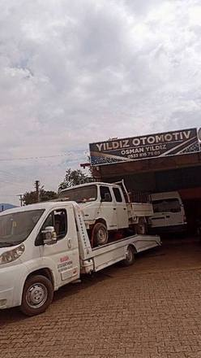
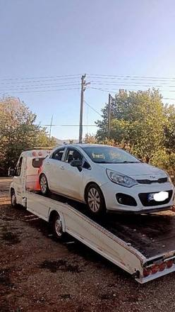
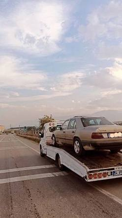
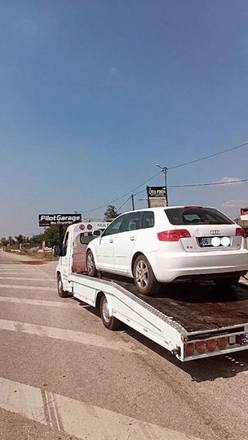
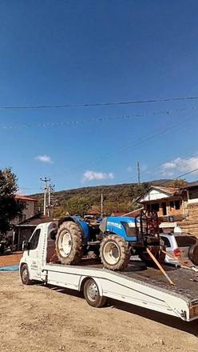
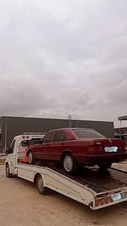
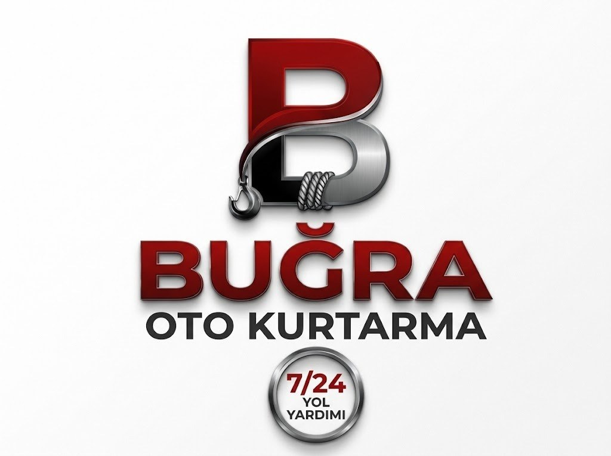
Sakarya · 7/24 açıkSakarya'nın her ilçesinde gece gündüz kayar kasalı çekici, oto kurtarma ve yol yardım. Arayın, konumunuzu söyleyin, ekibimiz yola çıksın.
Aradığınızda ne olduğunu kısaca gösterelim: ekip yola çıkar, aracınız kasaya alınır, istediğiniz adrese gider.
Yolda başınıza gelebilecek durumların çoğu için aynı numarayı aramanız yeterli.
Aracınız kasanın üstüne alınır, tekerlekler yola değmez. Çalışmayan, hasarlı veya alçak araçlarda arızalı araç kurtarma ve otomobil taşıma için en güvenli yöntem.
Kaza yapan araç için çekici: yoldan çıkmış ya da çarpmış aracı, yetkililerin yönlendirmesine uyarak güvenle alır ve istediğiniz adrese bırakırız.
Marş basmıyorsa önce yerinde takviye deneriz. Araç yine de çalışmazsa kasaya alıp servise götürürüz.
Patlak lastikte, uygun ve güvenli bir yerdeyseniz değişimde yardımcı oluruz. Uygun değilse aracı lastikçiye taşırız.
Küçük arızalarda aracın belirtisini telefonda dinler, yerinde çözülür mü yoksa serviste mi yapılmalı, baştan söyleriz.
Yolda yakıtı biten araca yerinde destek veririz.
Çamura, kara, kuma ya da çukura saplanan aracı zemine uygun yöntemle yola çıkarırız.
Otomobil taşıma hizmeti: Sakarya çıkışlı aracınızı Kocaeli, İstanbul, Bursa, Düzce ve çevre illere kasalı çekiciyle ulaştırırız.
İlçenize ya da yolunuza göre sayfayı seçin; o bölgede sık yaşanan durumları ve güzergâhları orada anlattık.
Otoyolda durmak zorunda kaldığınızda güvenli adımlar ve konumunuzu tarif etmenin yolu.
Sayfaya git →Kavşakların, yan yolların ve ağır vasıta trafiğinin yaşandığı hatta arıza ve kaza yardımı.
Sayfaya git →Merkezden köylere, Sapanca'dan Karasu'ya her ilçenin kendi sayfası.
Bölgeleri gör →Acil bir ihtiyacınız varsa doğrudan ilgili sayfaya geçin.
Saat kaç olursa olsun telefonumuz açık.
Sayfaya git →Acil durumda önce arayın, sonra canlı konum atın; gerisini biz yönetelim.
Sayfaya git →Motosiklet, van, kamyonet ve minibüs için aracınıza uygun taşıma. Önce telefonda konuşalım.
Sayfaya git →Lastik patladıysa güvenli bir yere çekilin; en doğru çözümü birlikte belirleyelim.
Sayfaya git →Aracınız arıza yaptıysa önce belirtiyi konuşalım; yerinde çözülüyorsa çözelim, değilse servise taşıyalım.
Sayfaya git →Yolda kalmadan önce ve kaldıktan sonra karar vermenizi kolaylaştıran kısa yazılar.
Mesafe, araç türü, zemin ve ek kalemler: tutarı nasıl öğrenirsiniz?
Oku →Yerinde değişim ne zaman güvenli, çekici ne zaman gerekir?
Oku →Belirtiler, takviyenin işe yaradığı durumlar ve çekicinin gerektiği an.
Oku →Yapmamanız gerekenler, güvenli adımlar ve çekiciye verilecek bilgiler.
Oku →Evet, telefonumuz gece de gündüz de açık. Bayram ve hafta sonu dahil her gün 24 saat, aynı numaradan ulaşabilirsiniz.
Sakarya'nın bütün ilçelerine: Adapazarı, Serdivan, Erenler, Arifiye, Sapanca, Akyazı, Hendek, Karasu, Kocaali, Geyve, Ferizli ve Pamukova başta olmak üzere. Köy ve yazlık yollarına da gidiyoruz.
Tek bir rakam vermek doğru olmaz; mesafe, araç türü ve aracın bulunduğu zemin fiyatı değiştirir. Yüklemeden önce telefonda tutarı söyler, siz onaylayınca başlarız.
Evet. Sakarya dışına, Kocaeli, İstanbul, Bursa ve Düzce gibi yakın illere şehirlerarası taşıma yapıyoruz.
Önce arayın, sonra WhatsApp'tan canlı konumunuzu gönderin. Haritada tam yerinizi görüp ekibi o noktaya yönlendiririz, tahmini varış süresini de söyleriz.
Canlı konum en kesin yöntemdir. Otoyoldaysanız gittiğiniz yönü ve en yakın km tabelasını da ekleyin.